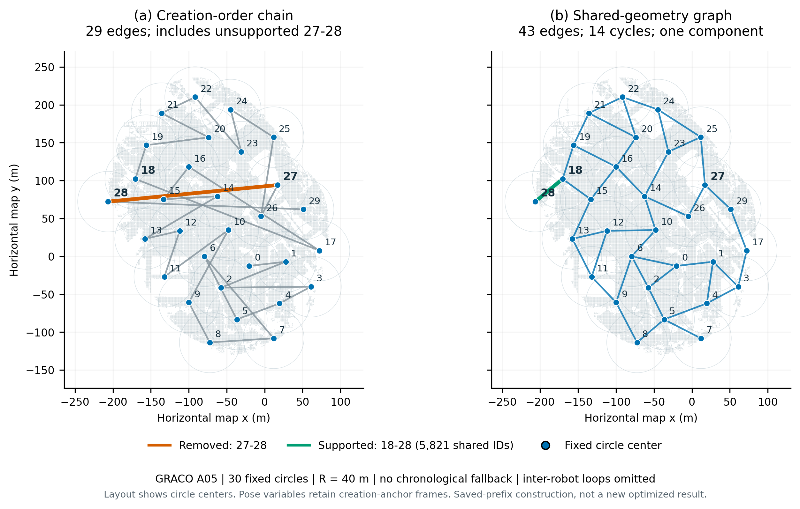

Submap 28 connects only to 18, which shares 5,821 native point IDs. The 224.7-m link from 27 to 28 is removed. All 30 nodes remain in one locally connected graph.

Nodes are drawn at fixed circle centers to expose neighborhood relationships. Actual variables retain creation-anchor IMU frames. This replays the saved online publication prefixes; it is not a new sensor replay or optimized accuracy result.
| Construction on 148 | Measured value |
|---|---|
| All 30 prefix updates | 1.397 s |
| Slowest prefix | 94.2 ms |
| Fresh process peak resident memory | 161.5 MiB |
| Peak cached geometry arrays | 11.66 MB |
| Candidate decisions | 17 insufficient support; 14 cycle-budget exclusions |
| Supported forest bridges exceeding normal degree budget | 4 |
Disconnected regions: they stay pending with separate component IDs until a supported local path reaches the reference submap. No fake links or priors are added. The present CBS interface does not independently optimize disconnected fragments; joint-map export refuses to label them globally aligned.
Evidence and cost: these are correlated map-consistency regularizers, not independent registrations. Shared support geometry stays local. Spatial PCM exchanges direct separator-pair summaries, which can increase communication; total CBS time and network usage require a matched run.
Verification on 148: 51 Python/ROS tests and 17 C++ tests passed, with no skips. Live tests cover GPU registration, spatial PCM, persistent growth, and a disconnected two-submap fragment joining through a later supported bridge.
Implementation verification · All graph edges, prefix diagnostics and hashes · Vector figure